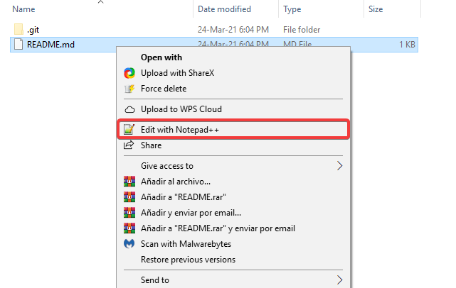
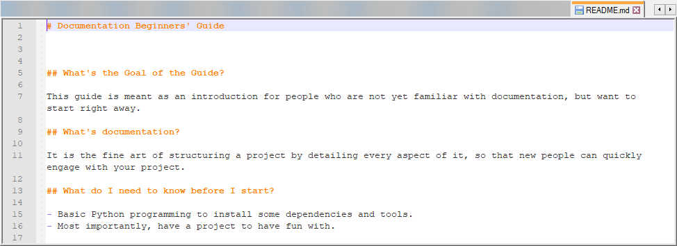
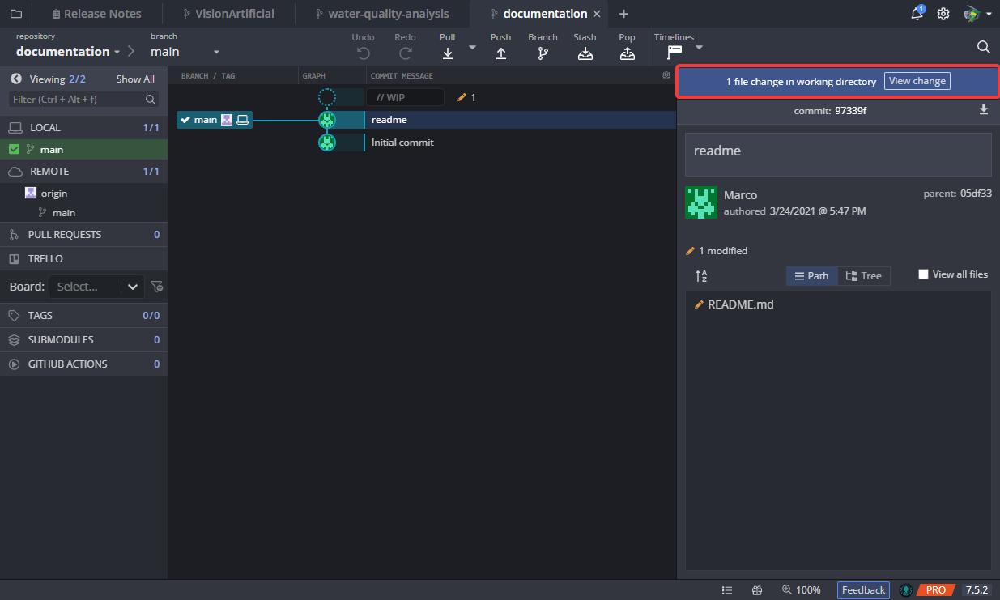
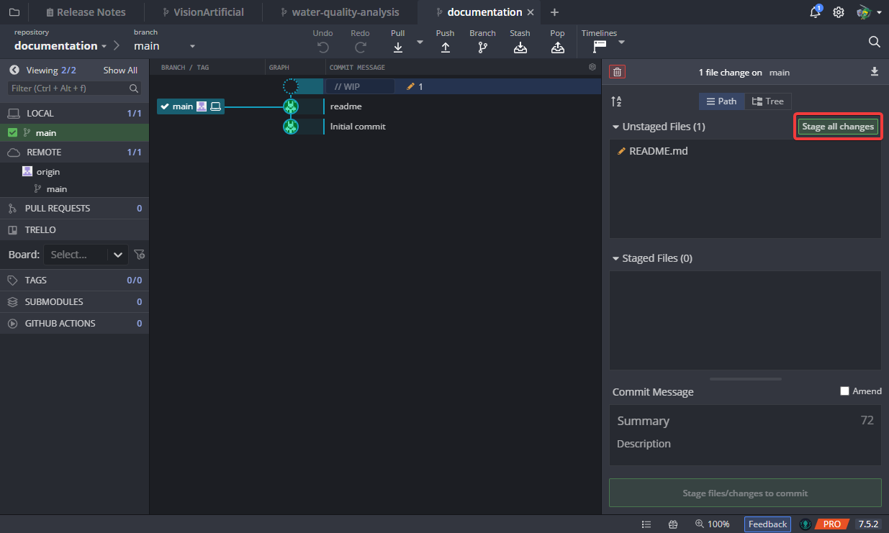
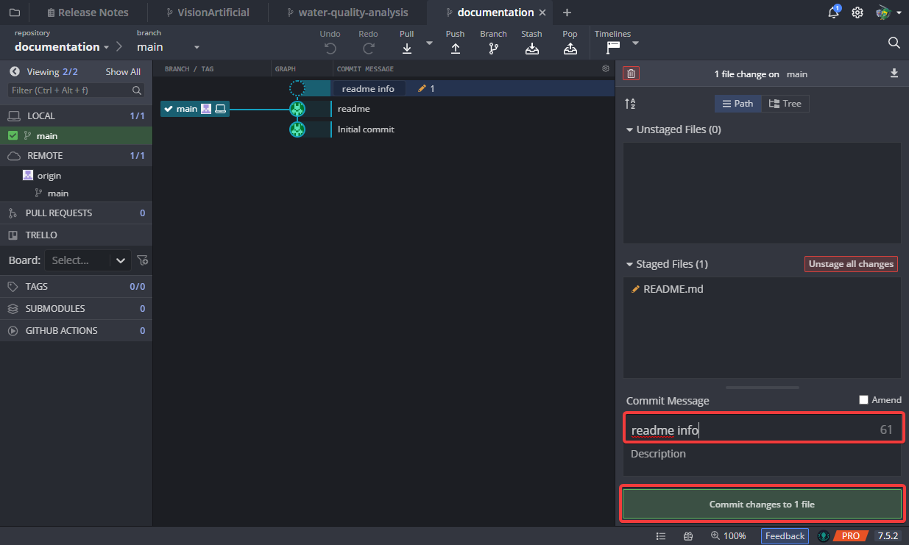
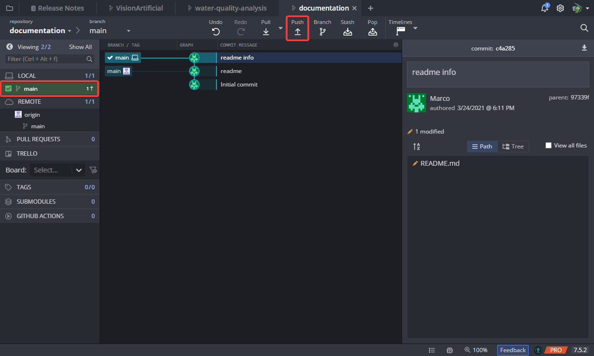
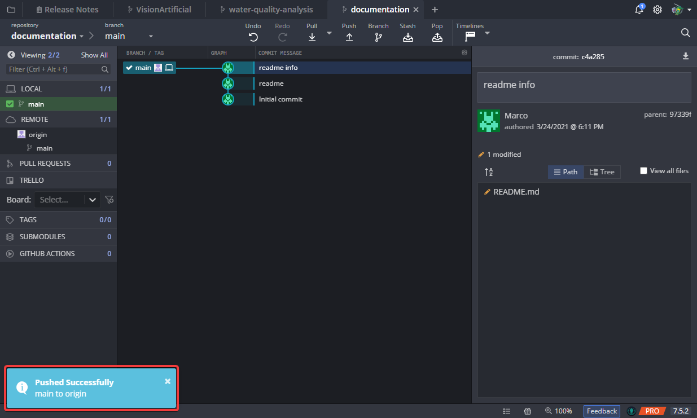
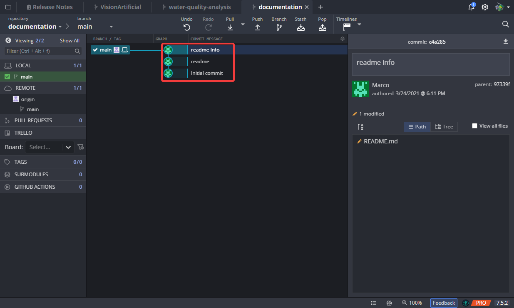
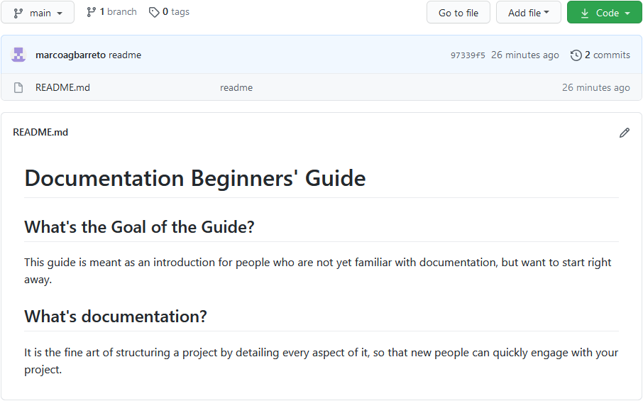

Pushing files to GitHub¶
Note
Now that you have your Workspace ready we can continue to push files into GitHub. If you haven’t done that, check the Workspace Setup section for dependencies installations.
The first thing you want to do is to make some changes in your project folder and upload them to GitHub to get a sense of how GitKraken works.
Head to your project folder and open the README file by right click and selecting
Edit with Notepad ++Add some content to it and save it. This type of file uses a Markdown style, you can visit the guide to start learning Markdown.
You should see some changes in GitKraken, click on View change.
The README file should appear as a changed file, which makes sense, because we edited it. Click on Stage all changes.
Then, we need to write a message, title or some brief info under Commit Message. After we put the Commit Message, we hit the Commit changes to 1 file.
On the top left we will see our branch named main with an up arrow to the right. This means that there is an upload pending. To upload the changes to GitHub click on the Push button.
If everything went right, you should see a confirmation dialog on the bottom left corner.
There will be a new item on the GitKraken tree with the Commit Message that you chose earlier.
Go to your GitHub repository to see the changes on the README file.
